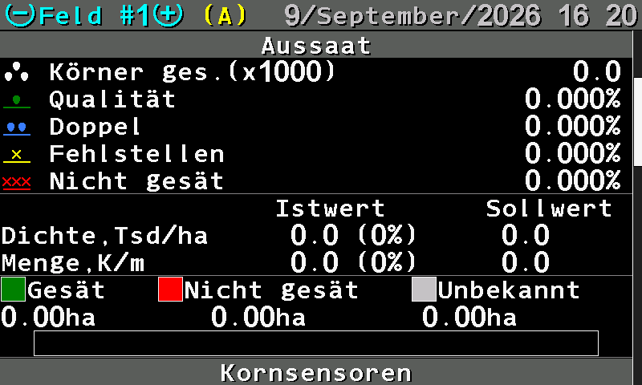
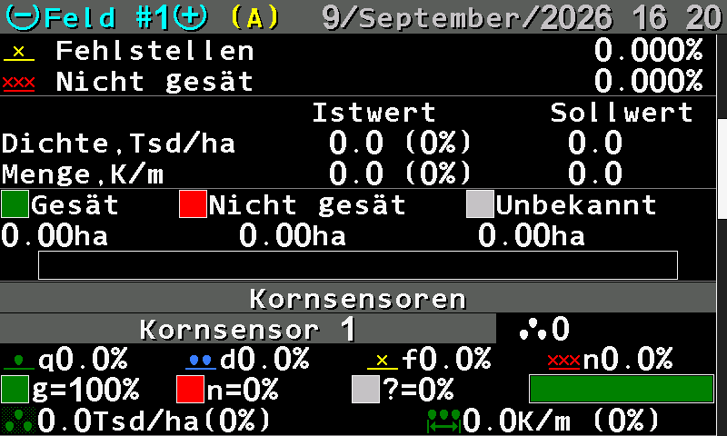
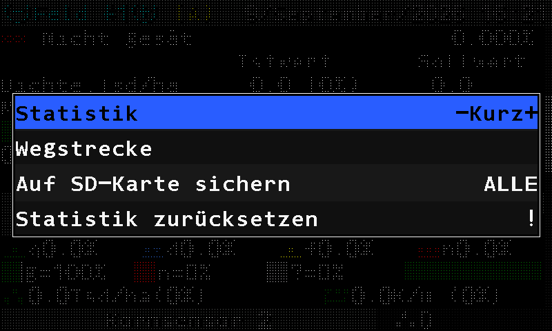

Der Bildschirm Statistik
Der Bericht über die Arbeit auf jedem Feld, Block für Block und Zeile für Zeile — und das Menü, das das Feld wählt, den Bericht speichert und ihn löscht.
Der Bildschirm Statistik ist der Bericht über die Arbeit: wie weit Sie gefahren sind, wie viel Sie bearbeitet haben, wie viel Sie gesät haben und wie gleichmäßig. Er wird für jedes Feld getrennt geführt und übersteht das Ausschalten. Öffnen Sie ihn mit „HOME“ vom Bildschirm Tabelle aus (zweimal vom Startbildschirm aus); verlassen Sie ihn mit „BACK“.
Der Bericht ist eine lange Liste. Blättern Sie mit „UP“ und „DOWN“ oder wischen Sie nach oben und unten.
Der Kopf und die Arbeit auf dem Feld

- Feldnummer. Das Feld, dessen Bericht Sie sehen. „MINUS“ und „PLUS“ — oder ein Wischen mit zwei Fingern — zeigen ein anderes Feld.
- (A). Dies ist das aktive Feld — das, in das das Panel jetzt schreibt.
- Datum und Uhrzeit. Das heutige Datum und die Uhrzeit.
- Weg. Gefahrene Strecke in km.
- Fläche. Bearbeitete Fläche in ha.
- Betriebszeit. Stunden, Minuten und Sekunden Arbeit.
- Fahrgeschwindigkeit. Die durchschnittliche Fahrgeschwindigkeit.
- Start / Ende. Wann die Arbeit auf diesem Feld begann und endete.
- Aussaat. Der nächste Block — siehe unten.
Der Block Aussaat

- Körner ges.(x1000). Die Summe in Tausend Körnern.
- Qualität. Der Anteil der Körner, die wie vorgesehen einzeln abgelegt wurden. Beurteilen Sie die Arbeit nach dieser Zahl.
- Doppel. Zwei Körner, wo eines vorgesehen war.
- Fehlstellen. Eine Lücke, wo ein Korn vorgesehen war.
- Nicht gesät. Der Anteil der Fahrt, auf dem überhaupt nichts herauskam.
- Istwert / Sollwert. Was ausgebracht wurde, gegen das, was eingestellt war.
- Dichte,Tsd/ha. In Tausend je Hektar; die Abweichung in Klammern.
- Menge,K/m. In Körnern je Meter; der Sollwert rechts.
- Gesät / Nicht gesät / Unbekannt. Das Feld in drei Teilen, in Hektar.
- Balken. Dieselbe Aufteilung als farbiger Balken: grün gesät, rot nicht gesät, grau unbekannt.
- Kornsensoren. Der nächste Block — Sektion für Sektion.
Unbekannt ist die Fläche, die gefahren wurde, während das Panel nicht urteilen konnte — keine Störung, aber auch kein Beweis für getane Arbeit.
Sektion für Sektion

- Kornsensoren. Es folgt ein Block je Sektion.
- Kornsensor 1. Die Sektionsnummer und die Körner, die sie gezählt hat.
- q d s n. Qualität, Doppelbelegungen, Fehlstellen und nicht gesät für diese Sektion.
- Gesät / nicht gesät / unbekannt. Der Anteil jedes Zustands für diese Sektion (s, n, ?) und der Balken.
- Dichte. Tausend je Hektar für diese Sektion, mit ihrer Abweichung.
- Abstand. Körner je Meter für diese Sektion, mit ihrer Abweichung.
Hier zeigt sich eine ungleichmäßig arbeitende Drillmaschine. Eine Sektion mit geringerer Qualität als die übrigen oder mit einem längeren roten Teil ihres Balkens weist auf diese Reihe hin: ein verstopfter Auslauf, eine verschlissene Scheibe, ein Sensor, der gereinigt werden muss.
Blöcke, die an anderen Maschinen erscheinen
| Block | Was er enthält |
|---|---|
| Arbeit ohne Alarmüberwachung | Der Teil der Arbeit, den das Panel nicht überwacht hat — gefahren bei ausgeschalteter oder gesperrter Überwachung. |
| Geschwindigkeitsüberwachung | Wie weit und wie lange Sie außerhalb des zulässigen Geschwindigkeitsbereichs gefahren sind. |
| Düngung, Flüssigdünger | Gedüngt / nicht gedüngt / unbekannt, wenn die Maschine sie ausbringt. |
| Produkt | Für ein nach Masse ausgebrachtes Produkt: die ausgebrachte Menge und die Istmenge gegen die Sollmenge in kg/ha. |

Das Menü des Bildschirms
Drücken Sie „MENU“ oder tippen Sie mit zwei Fingern.

| Punkt | Was er bewirkt |
|---|---|
| „Feld wählen“ | Macht das angezeigte Feld zum aktiven — das Panel schreibt von jetzt an in dieses. Wird nur angezeigt, solange Sie ein Feld ansehen, das nicht aktiv ist. Ein Feld, dessen Statistik nicht leer ist, kann erst gewählt werden, wenn seine Daten gelöscht sind; das Panel sagt es und fragt nach. |
| „Statistik“ | Schaltet den Bericht zwischen kurz und voll um. Der kurze Bericht behält die Summen und lässt die Einzelheiten je Sektion weg. |
| „Wegstrecke“ | Weg in km und Fläche in ha über die gesamte Lebensdauer des Systems. Diese Summen lassen sich nicht zurücksetzen. Ohne Geschwindigkeitssensor stattdessen die aufgelaufene Laufzeit. |
| „Auf SD-Karte sichern“ | Schreibt ein Feld oder alle auf die Speicherkarte. Wird angezeigt, solange eine Karte im Steckplatz steckt. |
| „Statistik zurücksetzen“ | Löscht die Statistik. |
Ihre Maschine tut etwas, das diese Seite nicht beantwortet? Schreiben Sie an support@agriwelt.com — es antwortet ein Ingenieur.